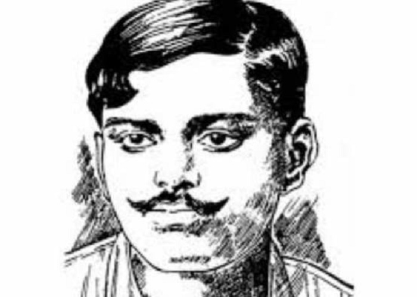

Chandrashekhar Azad
Don't see others doing better than you, beat your own records everday because success is a fight between you and yourself
Don't see others doing better than you, beat your own records everday because success is a fight between you and yourself
Date of Birth : July 23, 1906
Birth Name : Chandra Shekhar Tiwari
Place of Birth : Bhavra village in Jhabua dustrict of Madhya Pradesh
Parents : Pandit Sita Ram Tiwari (father) and Jagrani Devi (mother)
Education : Sanskrit Pathshala in Varanasi
Association : Hindustan Republican Association (HRA) later renamed Hindustan Socialist Republican Association (HSRA)
Movement : Indian Freedom Struggle
Political Ideology :Liberalism, Socialism, Anarchism
Religious views : Hinduism
Passed Away : February 27, 1931
Memorial : Chandrashekhar Azad Memorial (Shahid Smarak), Orchha, Tikamgarh, Madhya Pradesh
 Chandra Shekhar Azad was the quintessential firebrand revolutionary who fiercely craved independence for his country. A contemporary of Bhagat Singh, Azad never quite received the same levels of adoration for his deeds, yet his actions were no less heroic. His life-long goal was to create as much problem for the British Government as he could. He was the master of disguises and evaded capture by the British police multiple times. His famous proclamation, "Dushmano Ki Goliyon Ka Saamna Hum Karenge, /Azad Hi Rahe Hain, aur Azad hi Rahenge", which translates into "I will face the bullets of the enemies, I have been free and I'll forever be free", is exemplary of his brand of revolution. He embraced martyrdom like an old friend and inspired a fierce sense of nationalism in the hearts of his contemporaries.
Chandra Shekhar Azad was born Chandra Shekhar Tiwari, to Pandit Sita Ram Tiwari and Jagrani Devi on July 23, 1906 in Bhavra village in Jhabua district of Madhya Pradesh.
Chandra Shekhar grew up with Bhils who inhabited the area and learnt wrestling, swimming along with archery. He was an ardent follower of Lord Hanuman from a young age.
He practiced javelin throwing and developed an enviable physique. He received his early schooling in Bhavra. For higher studies he went to a Sanskrit Pathashala in Varanasi.
As a child Chandrashekhar was wayward and preferred outdoors. As a student he was average but once in Benares, he came in contact with several young nationalists.
The first wave of nationalist sentiments was awakened by the Non-cooperation movement declared by Gandhiji during 1920-1921. Chandra Shekhar rode this wave when he was a mere
teen and participated in the various organised protests with much gusto. 16-year-old Chandra Shekhar was arrested in one of these demonstrations. When asked his name, residence
and that of his father, he replied to the authorities, that his name was ‘Azad’ (free), his father’s name ‘Swatantrata’ (Freedom) and his residence as the prison cell. He was sentenced
to receive 15 whiplashes as punishment. He bore those with ample nonchalance and came to be revered as Chandra Shekhar Azad from then on.
The Jallianwallah Bagh Massacre took place in 1919 and the brutal deed of British oppression had reverberating effect on the Indian Nationalist movement. The blatant disregard exhibited by the British towards basic human rights and unnecessary use of violence on a group of unarmed and peaceful people, incited a burst of hatred from the Indians directed towards the British Raj. The nation was gripped by this anti-British euphoria and Chandra Shekhar was part of a group of young revolutionaries who dedicated their lives towards a single goal – securing freedom for his beloved motherland by driving the British away from India.
The announcement to suspend the non-cooperation movement came as a blow to the nascent Indian Nationalist Sentiments. Azad was much agitated in its aftermath and decided that a fully aggressive course of action was more suitable for his desired outcome. He met Ram Prasad Bismil, the founder of Hindustan Republican Association through Pranavesh Chatterji. He joined the HRA and concentrated his efforts on collecting funds for the association. He planned and executed daring attempts to rob government treasury to raise funds in order to further their revolutionary activities.
Ram Prasad Bismil conceived the idea of looting a train carrying treasury money to fund acquiring of weapons for revolutionary activities. Bismil had noticed several security loopholes in trains carrying treasury money and a suitable plan was devised. They targeted the No. 8 Down train travelling from Shahjahanpur to Lucknow and intercepted it at Kakori. They stopped the train by pulling the chain, overpowered the guard and took 8000 rupees from the guard cabin. In the ensuing gunfight between the armed guards and the revolutionaries, one passenger died. The government declared this as murder and launched an intense manhunt to round up the involved revolutionaries. Azad evaded arrest and carried on revolutionary activities from Jhansi.

Azad took a long detour and finally reached Kanpur where the headquarters of the HRA was based. There he met other firebrands like Bhagat Singh, Rajguru and Sukhdev. Pumped with renewed enthusiasm, he reorganised the HRA and renamed it as Hindustan Socialist Republican Association or HSRA together with Bhagat Singh. On October 30, 1928, Lala Lajpat Rai led a peaceful protest against the Simon Commission at Lahore. Police Superintendent James Scott ordered lathi strike to thwart the advancement of the march. Lalaji was severely injured in the process and died on November 17, 1928 as a result of the wounds. Azad and his peers held the police superintendent responsible for Lala’s death and they vowed to extract revenge. Together with Bhagat Singh, Sukhdev Thapar and Shivaram Rajguru, he plotted the assassination of Scott. On December 17, 1928, the plan was executed but a case of mistaken identity led to the killing of John P. Saunders, an Assistant Superintendent of Police. The HSRA claimed responsibility for the event the next day and the involved people shot to the top of the British’s most wanted list. Bhagat Singh was arrested following his demonstration in the Central Legislative Assembly in Delhi on April 8, 1929. When the HSRA bomb factories in Lahore and Saharanpur were busted, some of the members turned approver for the state. As a result around 21 members were arrested including Rajguru and Sukhdev. Azad along with 29 others were charged in the Lahore Conspiracy Case Trial, but he was among the few who the British authorities were unable to capture.
Azad’s impact on the British Raj law enforcement faction was evident from how much effort they put to capture him, dead or alive. They even announced a reward of Rs. 30,000 on his head. The huge amount of money led to vital information on the whereabouts of Azad. On February 27, 1931 Chandrashekhar Azad was meeting with friends at Alfred Park, Allahabad. A pre-informed police surrounded the park and asked Chandrashekhar Azad to surrender. Azad fought valiantly to allow his friends safe passage and killed three policemen. Though his shooting skills were immensely sharp, he started receding and was badly injured. After nearly exhausting his ammunition and foreseeing no means of escape, he shot himself in the head with his last bullet. He upheld his vow never to be captured by the British.
Chandra Shekhar Azad’s true legacy lies in his indomitable urge to remain free forever. His name instantly brings into fore, a one man army who shook the foundations of the British Raj. Azad’s activities inspired awe from his contemporaries and the future generation, who whole-heartedly dedicated their lives to the freedom struggle. At the same time, he became a real problem for the British authorities. What Azad gifted to his countrymen is a fierce longing to be free of the oppressive shackles that British Imperialism was imposing. A grand departure from the non-violent route that Gandhi and the Congress adopted to attain self-rule, Azad’s way of violent usurping freedom set the patriotic sentiments of Indians on fire. He is still remembered as one of the bravest and awe-inspiring figures of Indian armed revolution. The tales of his heroic escape evading capture is the stuff of legends. He dreamt of a free India based on socialist ideals and committed himself towards realizing his dream. His contributions did not lead to immediate freedom, but his grand sacrifice intensified the fire in Indian revolutionaries to fight the British rule even more fiercely.
After independence, to commemorate the bravery of Chandrashekhar Azad, Alfred Park in Allahabad was renamed Chandrashekhar Azad Park.
Multiple patriotic films have depicted Azad’s character. In the 2002 Ajay Devgan starrer biopic of Bhagat Singh, Azad’s character was
portrayed by Akhilendra Mishra. The patriotism of Azad, Rajguru, Pandit Ram Prasad Basil and Ashfaqula Khan was depicted in Rang De Basanti,
a 2006 Bollywood film where Amir Khan portrayed the character of Chandra Shekhar Azad.
Numerous educational institutions, parks and public places across India named after him to honor his memory.
His name invoked as a source of inspiration in India’s quest for justice and freedom.
He remains a symbol of bravery and defiance against oppressive forces.